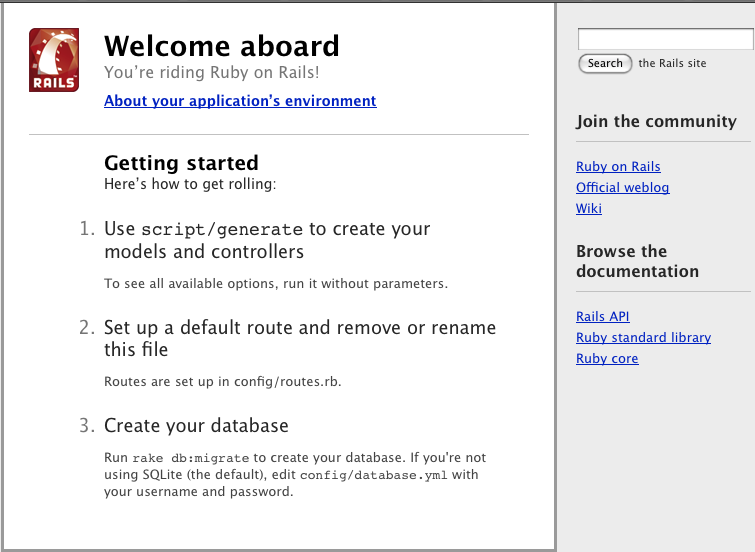

Zaczynamy z Ruby on Rails
Ten przewodnik jest wprowadzeniem do Ruby on Rails. Po jego przeczytaniu będziesz zaznajomiony z następującymi zagadnieniami:
-
instalowaniem Railsów, tworzeniem nowej aplikacji oraz zestawianiem połączenia z bazę danych
-
ogólnym układem aplikacji
-
podstawami wzorca MVC (Model, View, Controller) oraz architektury RESTful
-
szybkim generowaniem podstawowych elementów aplikacji
1. Co obejmuje przewodnik?
Ten przewodnik jest przeznaczony dla początkujących, którzy chcą rozpocząć tworzenie aplikacji opartych na Railsach. Nie zakłada, że masz wcześniejsze doświadczenia z Railsami. Niemniej jednak, do najlepszego wykorzystania tego przewodnika, konieczna jest instalacja:
-
języka Ruby
-
RubyGems - narzędzie do dystrybuowania i instalowania paczek zawierających moduły i rozszerzenia języka Ruby
-
systemu zarządzania bazą danych SQLite (preferowane), MySQL lub PostgreSQL
Zdecydowanie zaleca się zapoznanie z językiem Ruby przed rozpoczęciem przygody z Railsami. Znacznie łatwiej jest śledzić, co się dzieje w Railsach, rozumiejąc podstawowy składni języka Ruby. Railsy nie będą w stanie w magiczny sposób zrewolucjonizować sztuki pisania aplikacji internetowych, jeżeli nie masz doświadczenia w używaniu tego języka. W Internecie istnieje kilka dobrych darmowych źródeł pomocnych w nauce języka Ruby, w tym:
2. Co to są Railsy?
Railsy są frameworkiem służącym do tworzenia aplikacji internetowych napisanym w języku Ruby. Zostały one tak zaprojektowane, aby ułatwić programowanie aplikacji internetowych, poprzez przyjęcie kilku założeń, dotyczących tego czego potrzebuje każdy programista aby rozpocząć pracę. Pozwalają one na pisanie krótszego kodu, jednocześnie umożliwiając osiąganie lepszych rezultatów niż ma to miejsce w większości innych języków i frameworków. Poza tym programiści, którzy od dawna używają Railsów, uważają, że pisanie aplikacji z ich użyciem sprawia prawdziwą przyjemność.
Railsy są "upartym" oprogramowaniem. Oznacza to, że były tworzone z przekonaniem, że istnieje najlepszy sposób rozwiązywania pewnych problemów i zostały zaprojektowane tak, by zachęcać do wyboru tego sposobu, a w niektórych przypadkach - by zniechęcić do wyboru alternatywy. Jeśli nauczysz się "The Rails Way", odkryjesz ogromny wzrost produktywności. Jeżeli jednak podczas pracy z Railsami pozostaniesz przy nawykach charakterystycznych dla programowania w innych językach lub będziesz wykorzystywać wzorce, których już kiedyś się nauczyłeś, efekty mogą nie być aż tak pomyślne.
Filozofia Railsów obejmuje kilka zasad:
-
DRY - "Don’t Repeat Yourself" (Nie powtarzaj się) - sugeruje, że pisanie w kółko tego samego kodu jest po prostu złe.
-
"Convention over Configuration" (Konwencja Ponad Konfiguracją) - Railsy przyjmują pewne założenia, odnośnie tego, co i jak zamierzasz zrobić, dlatego nie zmuszają Cię do samodzielnego ustawiania każdej najdrobniejszej opcji w plikach konfiguracyjnych.
-
REST (Representational State Transfer) jest najlepszym wzorcem dla aplikacji internetowych - organizowanie aplikacji wokół zasobów i standardowych zapytań HTTP pozwala szybko kroczyć do przodu.
2.1. Architektura MVC
Railsy zorganizowane są wokół trzech warstw aplikacji: modelu (model), widoku (view) oraz kontrolera (controller), w skrócie nazywanych MVC. Wzorzec MVC obejmuje:
-
odizolowanie logiki biznesowej od interfejsu użytkownika
-
łatwość utrzymania kodu zgodnie z zasadą DRY
-
wyraźne wskazanie, gdzie powinny znajdować się różne elementy kodu, co ułatwia zarządzenie nim
2.1.1. Modele
Model reprezentuje dane aplikacji i reguły do manipulowania tymi danymi. W przypadku Railsów, modele są głównie wykorzystywane do zarządzania zasadami interakcji z odpowiednią tabelą bazy danych. W większości przypadków jednej tabeli bazy danych odpowiada jeden model. Większość logiki biznesowej aplikacji będzie skoncentrowana w modelach.
2.1.2. Widoki
Widoki tworzą interfejs użytkownika aplikacji. W Railsach widoki są często plikami HTML zawierającymi kod w języku Ruby, wykonujący zadania związane wyłącznie z prezentacją danych. Przede wszystkim są one odpowiedzialne za dostarczanie danych do przeglądarki internetowej lub innego narzędzia, które jest używane do oglądania efektów działania aplikacji.
2.1.3. Kontrolery
Kontrolery "sklejają" modele i widoki. W Railsach odpowiadają za przetwarzanie żądań przychodzących z przeglądarki internetowej, pozyskiwanie danych z modeli i przekazywanie ich do widoków w celu ich prezentacji.
2.2. Składniki Railsów
Railsy dostarczają zestaw komponentów do tworzenia aplikacji internetowych. Są to:
-
Action Controller
-
Action View
-
Active Record
-
Action Mailer
-
Active Resource
-
Railties
-
Active Support
2.2.1. Action Controller
Moduł Action Controller jest komponentem zarządzającym kontrolerami. Action Controller przetwarza przychodzące zapytania, wydobywa z nich parametry i wysyła je do odpowiedniej akcji. Usługi świadczone przez Action Controller obejmują zarządzanie sesją, renderowanie widoków i zarządzanie przekierowaniami.
2.2.2. Action View
Moduł Action View zarządza widokami. Może domyślnie tworzyć zarówno widok HTML jak i XML. Action View zarządza renderowaniem szablonów (w tym szablonami zagnieżdżonymi oraz podszablonami) i dostarcza wsparcie dla AJAXa.
2.2.3. Active Record
Moduł Active Record jest podstawowym elementem warstwy modelu. Zapewnia niezależność od bazy danych, dostarcza podstawowe funkcjonalności CRUD (create, read, update and delete - utwórz, odczytaj, aktualizuj, usuń), zaawansowane możliwości wyszukiwania i zdolność do wiązania modeli a także wiele innych usług.
2.2.4. Action Mailer
Moduł Action Mailer służ do tworzenia usług e-mail. Action Mailer może być używany do wysyłania e-maili w oparciu o elastyczne szablony lub do odbioru i przetwarzania przychodzących wiadomości.
2.2.5. Active Resource
Moduł Active Resource pozwala na zarządzanie powiązaniami pomiędzy obiektami biznesowymi oraz internetowymi serwisami RESTful. Implementuje mapowanie zasobów internetowych na obiekty lokalne w oparciu o semantykę CRUD.
2.2.6. Railties
Moduł Railties jest rdzeniem kodu Rails, służącym do tworzenia nowych aplikacje i łączenia w nich poszczególnych elementów frameworku.
2.2.7. Active Support
Moduł Active Support jest obszernym zbiorem użytecznych klas oraz rozszerzeń standardowych bibliotek języka Ruby, które są wykorzystywane w Railsach, zarówno przez rdzeń kodu, jak i Twoją aplikację.
2.3. REST
Praca doktorska Roya Fieldinga Architectural Styles and the Design of Network-based Software Architectures jest powszechnie uznawana za fundament architektury RESTful. Na szczęście, nie musisz czytać tego dokumentu w całości, aby zrozumieć, jak działa REST w Rails. REST (Representational State Transfer) jest stylem architektury oprogramowania sprowadzającym się do dwóch podstawowych zasad:
-
Korzystanie z identyfikatorów zasobów (które na potrzeby tego przewodnika możesz traktować jako adresy URL) do reprezentowania zasobów.
-
Przesyłanie reprezentacji stanu zasobów pomiędzy elementami systemu.
Na przykład, dla aplikacja Railsowej następujące żądanie:
DELETE /photos/17
będzie rozumiane jako odnoszące się do zdjęcia o ID 17 oraz jako wskazanie żądanego działania - usunięcie tego zasoby. REST jest naturalnym stylem architektury aplikacji internetowych, który Railsy czynią jeszcze bardziej intuicyjnym, poprzez korzystanie z konwencji, pozwalających na nieprzejmowanie się jego złożonością oraz różnicami pomiędzy przeglądarkami.
Jeśli chciałbyś dowiedzieć się czegoś więcej na temat REST jako stylu architektonicznego, polecam bardziej przystępne źródła od pracy Fieldinga:
3. Tworzenie nowego projektu w Railsach
Z pomocą tego przewodnika, będziesz mógł utworzyć projekt prostego bloga w Railsach. Zanim przystąpisz do tworzenia aplikacji, upewnij się jednak, że masz zainstalowane Railsy.
3.1. Instalacja środowiska Rails
W większości przypadków, najprostszym sposobem zainstalowania Railsów jest skorzystania z RubyGems:
$ gem install rails
|
|
Istnieją pewne szczególne okoliczności, w których można zastosować alternatywną strategię instalacji: |
-
Jeśli pracujesz w systemie Windows, będzie Ci łatwiej zainstalować Instant Rails. Pamiętaj jednak, że Instant Rails rzadko zawierają aktualną wersją Railsów. Ponadto, Windowsowa wersja Railsów jest ogólnie mniej przyjazna w użytkowaniu niż te przeznaczone dla innych systemów operacyjnych. Jeśli to możliwe, polecamy korzystanie z Linuksowej maszyny wirtualnej.
-
Jeżeli chcesz być na bieżąco z najnowszymi zmianami w środowisku Rails, proponujemy skopiowanie kodu źródłowego z githuba, aczkolwiek nie jest to opcja zalecana dla początkujących.
3.2. Tworzenie bloga
Otwórz terminal i przejdź do folderu, w którym posiadasz odpowiednie uprawnienia do tworzenia plików, a następnie wpisz polecenie:
$ rails blog
To stworzy Railsową aplikację, która korzysta z bazy danych SQLite. Jeśli wolisz korzystać z MySQL, wywołaj zamiast niego polecenie:
$ rails blog -d mysql
A jeśli używasz PostgreSQL do przechowywania danych, zastosuj polecenie:
$ rails blog -d postgresql
|
|
Uruchamiając rails -h możesz zobaczyć wszystkie akceptowane opcje. |
Po utworzeniu aplikacji, aby móc kontynuować pracę, przejdź do odpowiedniego folderu:
$ cd blog
Railsy utworzą folder o nazwie blog w katalogu roboczym. Otwórz ten folder i przyjrzyj się jego zawartości. Podczas pracy z tym przewodnikiem, w większości będziemy korzystać z folderu app/, ale poniżej możesz zapoznać się z podstawowymi funkcjami katalogów i plików, które domyślnie utworzą Railsy.
| File/Folder | Purpose |
|---|---|
README |
Jest to krótka instrukcja dla danej aplikacji. Za jej pomocą możesz poinformować innych o tym, jak działa Twoja aplikacja i jak ją można uruchomić. |
Rakefile |
Plik ten zawiera listę zadań, które można uruchomić w linii poleceń. |
app/ |
Folder zawiera kontrolery, modele i widoki dla danej aplikacji. Na tym folderze będziemy koncentrować się w dalszej części tego przewodnika. |
config/ |
Folder zawierający pliki konfiguracyjne aplikacji, obejmujące zmienne czasu uruchomienia, konfigurację bazę danych, ścieżki dostępu etc. |
db/ |
Pokazuje aktualny schemat bazy danych, jak również jego migracje (o których niedługo będziesz się uczyć). |
doc/ |
Dokumentacja aplikacji. |
lib/ |
Dodatkowe moduły aplikacji (nieuwzględnione w tym przewodniku). |
log/ |
Logi aplikacji. |
public/ |
Jedyny całkowicie dostępny publicznie folder. Zawiera wszelkie zdjęcia, JavaScript, arkusze stylów (CSS) i inne statyczne pliki. |
script/ |
Skrypty dostarczone przez Rails w celu uproszczenia powtarzających się zadań, takich jak benchmarking, instalowanie wtyczek (plugin) i uruchamianiu konsoli lub serwera WWW |
test/ |
Testy jednostkowe, tak zwane "fixtures" oraz inne narzędzia służące do przeprowadzania testów. Są one opisane w: Testowanie aplikacji Rails |
tmp/ |
Pliki tymczasowe |
vendor/ |
Miejsce na kod, którego sami nie napisaliśmy, ale chcemy wykorzystać. W standardowej aplikacji Rails mogą znaleźć się tutaj Ruby Gems, kod źródłowy Railsów (jeśli zainstalujesz go w swoim projekcie) i wszystkie dodatkowe wtyczki z gotowym kodem. |
3.3. Konfiguracja bazy danych
Prawie każda aplikacja Railsowa korzysta z bazy danych. Rodzaj baza danych, której używamy, jest określony w pliku konfiguracyjnym config/database.yml. Jeśli otworzysz ten plik w nowej aplikacji Railsowej, zostanie wyświetlona domyślna konfiguracja bazy danych SQLite. Plik zawiera sekcje dla trzech różnych środowisk, w których Railsy mogą być domyślnie uruchomione:
-
środowisko development (rozwojowe) jest używane na komputerze programisty, aby mógł oglądać bezpośrednio rezultaty wprowadzanych zmian
-
środowisko test (testowe) służy do uruchamiania automatycznych testów
-
środowisko production (produkcyjne) jest używane kiedy aplikacja uruchomiona jest na serwerze produkcyjnym
3.3.1. Konfiguracja bazy danych SQLite
Railsy mają wbudowaną obsługę SQLite, który jest lekkim, pozbawionym serwera systemem zarządzania bazą danych. Mimo możliwości przeciążenia SQLite’a w środowisku produkcyjne, działa on zadowalająco podczas pisania programu oraz testów. Railsy domyślnie używają SQLite przy tworzeniu nowego projektu, ale zawsze można to zmienić.
Poniżej znajduje się część domyślnej konfiguracji pliku z ustawieniami dla środowiska rozwojowego:
development: adapter: sqlite3 database: db/development.sqlite3 timeout: 5000
Jeśli nie masz żadnej zainstalowanej bazy danych, najłatwiej będzie Ci skorzystać z SQLite’a, w czym mogą być pomocne Ruby Gems (posiadacze Maca z OS X w wersji 10.5 lub nowszej mają go zainstalowanego domyślnie):
$ gem install sqlite3-ruby
3.3.2. Konfiguracja bazy danych MySQL
Jeżeli zdecydujesz się na używanie bazy danych MySQL, Twój plik config/database.yml będzie wyglądał trochę inaczej:
development: adapter: mysql encoding: utf8 database: blog_development username: root password: socket: /tmp/mysql.sock
Ta konfiguracja powinna działać bez problemu, jeśli Twoja instalacja MySQLa nie ma wprowadzonego hasła dla super-użytkownika (root user). Jeśli jednak jest inaczej, koniecznie zmień nazwę użytkownika oraz hasło w powyższym kodzie.
3.3.3. Konfiguracja Bazy Danych PostgreSQL
Używając PostgreSQL Twój plik config/database.yml powinien zostać zmodyfikowany do pracy z tą bazą danych:
development: adapter: postgresql encoding: unicode database: blog_development username: blog password:
Konieczna jest zmiana nazwy użytkownika oraz hasła w konfiguracji środowiska rozwojowego.
3.3.4. Tworzenie Bazy Danych
Teraz, gdy masz już skonfigurowaną bazę danych, czas by Railsy stworzyły dla ciebie pustą bazę danych. Możesz to zrobić uruchamiając komendę rake:
$ rake db:create|
|
Rake jest poleceniem ogólnego zastosowania, które Railsy używają do wielu rzeczy. By zobaczyć listę dostępnych komend uruchom rake -T. |
4. Witajcie Railsy!
Jednym z tradycyjnych sposobów uczenia się nowego języka jest pobieżne przeglądnięcie jego tekstu. By tak zrobić w Railsach, konieczne jest stworzenie przynajmniej kontrolera oraz widoku. Na szczęście możesz to zrobić używając pojedynczej komendy, wpisując ją do terminala:
$ script/generate controller home index
|
|
Jeżeli używasz systemu Windows lub gdy twój Ruby jest skonfigurowany w niestandardowy sposób, możliwe że będziesz musiał przekazać komendę script bezpośrednio do Ruby’ego: ruby script/generate controller home index. |
Railsy stworzyły dla Ciebie kilka plików, włączając w to app/views/home/index.html.erb - szablon, który będzie używany do pokazywania efektów akcji index w kontrolerze home. Otwórz ten plik w edytorze tekstów i dopisz do niego tę pojedynczą linijkę kodu:
<h1>Hello, Rails!</h1>
4.1. Uruchamianie serwera WWW
Teraz, za pomocą jedynie dwóch komend, masz gotowy i działający Railsowy program! Będziesz mógł go zobaczyć w przeglądarce uruchamiając go za pomocą komendy:
$ script/server
Domyślnie spowoduje to odpalenie instancji serwera aplikacyjnego Mongrel (Railsy mogą wykorzystywać kilka innych serwerów aplikacji). By zobaczyć jak działa Twój program, otwórz okno przeglądarki i przejdź pod adres http://localhost:3000. Powinieneś zobaczyć domyślną stronę informacyjną:

|
|
By zatrzymać serwer WWW naciśnij Ctrl+C w oknie terminala podczas jego działania. Generalnie Railsy działające w trybie rozwojowym, po wprowadzeniu zmian w Twoich plikach, nie wymagają zatrzymywania serwera - zostaną one automatycznie zauważone przez serwer. |
Ekran powitalny jest pierwszym testem dla nowego programu napisanego w Railsach - upewnia nas, że oprogramowanie którym dysponujemy, jest poprawnie skonfigurowane. Aby zobaczyć nowoutworzoną stronę, przejdź pod adres http://localhost:3000/home/index.
4.2. Konfiguracja strony domowej programu
Prawdopodobnie chcesz zamienić domyślną stronę startową ze stroną Twojego programu. Pierwszym krokiem jest wykasowanie z katalogu public strony domyślnej:
$ rm public/index.htmlPowinieneś teraz wskazać Railsom gdzie jest zlokalizowana Twoja strona domowa. Otwórz plik config/routes.rb w edytorze - jest to plik routingu. Zawiera wpisy w specjalnym DSLu (Domain Specific Language - specyficzny język domenowy), które pokazują Railsom w jaki sposób przekształcić adres wprowadzony w przeglądarce na odpowiednie akcje kontrolerów. Na dole tego pliku znajdują się dwie domyślne drogi:
map.connect ':controller/:action/:id' map.connect ':controller/:action/:id.:format'
Domyślne drogi obsługują proste żądania, takie jak /home/index: Railsy tłumaczą je na wywołanie akcji index w kontrolerze home. Kolejny przykład, /posts/edit/1 uruchomi akcję edit w kontrolerze posts z parametrem id równym 1.
By połączyć Twoją stronę domową, musisz dodać jeden wpis do pliku routingu, powyżej drogi domyślnej:
map.root :controller => "home"
Ta linijka ilustruje jeden mały kawałek podejścia "konwencja ponad konfiguracją": jeżeli nie podasz żadnej akcji, Railsy uruchomią domyślnie akcję index.
Po przejściu do strony http://localhost:3000 , zobaczysz widok home/index .
|
|
Więcej informacji na temat routingu znajdziesz w przewodniku Routing w Railsach. |
5. Szybki start dzięki rusztowaniu.
Railsowe rusztowanie (scaffolding) jest szybkim sposobem na napisanie znacznej części programu. Jeśli chcesz stworzyć modele, widoki i kontrolery dla nowych zasobów w pojedynczej operacji, to jest to odpowiednie narzędzie dla Ciebie.
6. Tworzenie zasobu
W przypadku programów takich jak blog, możesz zacząć od stworzenia zasobu Post z rusztowaniem, który będzie reprezentował pojedynczy wpis w blogu. Aby to zrobić, wprowadź następującą komendę w terminalu:
$ script/generate scaffold Post name:string title:string content:text
|
|
Chociaż rusztowanie pozwoli Ci szybko rozpocząć pisanie programu, ten uniwersalny kod raczej nie będzie idealnie pasować do Twojej aplikacji. W większości przypadków będziesz musiał samodzielnie dokonać w nim zmian. Wielu doświadczonych programistów Rails unika używania rusztowań na rzecz pisania większości kodu źródłowego od podstaw, bez używania gotowych wzorców. |
Generator rusztowania utworzy w Twoim programie 14 plików, wspólnie z paroma folderami i jeden dodatkowo zmodyfikuje. Oto krótki przegląd tego co tworzy powyższa komenda:
| File | Purpose |
|---|---|
app/models/post.rb |
Model dla posta |
db/migrate/20081013124235_create_posts.rb |
Migracja do tworzenia tabeli postów w bazie danych (nazwa która pojawi się u Ciebie będzie zawierała inny znacznik czasowy) |
app/views/posts/index.html.erb |
Widok indeksu wszystkich postów |
app/views/posts/show.html.erb |
Widok pojedynczego posta |
app/views/posts/new.html.erb |
Widok tworzenia nowego posta |
app/views/posts/edit.html.erb |
Widok edycji posta |
app/views/layouts/posts.html.erb |
Widok określający całościowy wygląd i działanie innych widoków dla postów |
public/stylesheets/scaffold.css |
Arkusz stylów poprawiający wygląd widoków w rusztowaniu |
app/controllers/posts_controller.rb |
Kontroler postów |
test/functional/posts_controller_test.rb |
Testy funkcjonalności dla kontrolera postów |
app/helpers/posts_helper.rb |
Helpery używane w widokach postów |
config/routes.rb |
Modyfikacja polegająca na uwzględnieniu postów w routingu |
test/fixtures/posts.yml |
Posty testowe |
test/unit/post_test.rb |
Testy jednostkowe dla modelu postów |
test/unit/helpers/posts_helper_test.rb |
Testy jednostkowe dla helpera dla postów |
6.1. Uruchamianie Migracji
Jednym z produktów komendy: script/generate scaffold jest migracja bazy danych. Migracje są klasami Rubiego, które upraszczają tworzenie i modyfikowanie tabel baz danych. Railsy używają komend rake’a do uruchamiania migracji i pozwalają na wycofywanie ich po tym, jak zostały zaaplikowane w bazie danych. Nazwy plików migracji zawierają znaczniki czasowe, by zapewnić ich przetwarzanie w porządku, w jakim zostały utworzone.
Gdy zajrzysz do pliku db/migrate/20090113124235_create_posts.rb (jego nazwa może się u Ciebie trochę różnić), zobaczysz następującą zawartość:
class CreatePosts < ActiveRecord::Migration def self.up create_table :posts do |t| t.string :name t.string :title t.text :content t.timestamps end end def self.down drop_table :posts end end
Gdybyś chciał ująć ten kod w słowa, brzmiałby on mniej więcej tak: gdy migracja jest uruchomiona, tworzy tabelę o nazwie posts z dwoma kolumnami zawierającymi łańcuchy znaków (name i title) i jedną kolumną tekstową (content), a wraz z nimi kolumny znaczników czasu, by śledzić czas jej utworzenia oraz ostatniej aktualizacji. Więcej szczegółów na temat sposobu pisania migracji znajdziesz w przewodniku Migracje.
Teraz możesz użyć komendy rake by wprowadzić migracje do bazy danych:
$ rake db:create $ rake db:migrate
|
|
Ponieważ domyślnie pracujesz w środowisku rozwojowym, ta komenda wykona się na bazie danych zdefiniowanej w sekcji development pliku: config/database.yml. |
6.2. Dodawanie hiperłącza
By połączyć posty ze stroną domową, którą już stworzyłeś, możesz dodać do niej hiperłącze. Otwórz plik /app/views/home/index.html.erb i dopisz do niego:
<h1>Hello, Rails!</h1> <%= link_to "My Blog", posts_path %>
Metoda link_to jest jednym z wbudowanych helperów dla widoków. Tworzy ona link z tekstem do wyświetlenia oraz informacją, gdzie prowadzi – w tym wypadku ze ścieżką do posta.
6.3. Praca z postami w przeglądarce
Teraz jesteś już gotowy do pracy z postami. Na początek przejdź do: http://localhost:3000 i kliknij w link My Blog.

Jest to rezultat renderowania Twoich postów z użyciem widoku index. Aktualnie nie ma żadnych wpisów w bazie danych, ale zawsze możesz je utworzyć klikając w link New Post. Możesz również przeglądać i edytować posty, a nawet je wykasować. Cały logika i HTML stworzone były za pomocą pojedynczego polecenia script/generate scaffold.
|
|
W środowisku rozwojowym (na nim domyślnie pracujesz) z każdym żądaniem przeglądarki Railsy wgrywają od nowa program, dzięki czemu nie jest konieczne restartowanie serwera WWW. |
Gratulacje! Napisałeś swoją pierwszą aplikację w Railsach! Nadszedł czas, aby przyjrzeć się efektom pracy.
6.4. Model
Zawartość pliku modelu app/models/post.rb jest niemal tak samo prosta jak jego utworzenie:
class Post < ActiveRecord::Base end
Nie zawiera on zbyt wiele treści – zauważ jednak że klasa Post dziedziczy z ActiveRecord::Base. Moduł Active Record za darmo dostarcza wielu funkcji dla Twoich modeli, włączając w to podstawowe operacje na danych CRUD (create, read, update, delete) czy weryfikowanie danych, jak również wsparcie dla zaawansowanego wyszukiwania i zdolność do wiązania ze sobą wielu różnych modeli.
6.5. Sprawdzanie poprawności danych
Railsy są wyposażone w metody, które pomogą Ci sprawdzić poprawność danych wysyłanych do modeli. Wprowadź poniższe zmiany do pliku: app/models/post.rb
class Post < ActiveRecord::Base validates_presence_of :name, :title validates_length_of :title, :minimum => 5 end
Dzięki nim mamy pewność, że każdy post będzie mieć nazwę oraz tytuł, a ten ostatni nie będzie miał mniej niż 5 znaków. Railsy mogą sprawdzać różne warunki w modelu, włączając w to obecność lub unikalność kolumn, ich format i istnienie związanych z nimi obiektów.
6.6. Używanie konsoli
By zobaczyć, jak sprawdzanie poprawności danych działa w praktyce, użyjemy konsoli. Konsola, będąca narzędziem linii poleceń, umożliwia Ci wykonywanie kodu Rubiego w kontekście Twojej aplikacji:
$ script/console
Możesz jej użyć do pracy z modelami:
>> p = Post.create(:content => "A new post") => #<Post id: nil, name: nil, title: nil, content: "A new post", created_at: nil, updated_at: nil> >> p.save => false >> p.errors => #<ActiveRecord::Errors:0x23bcf0c @base=#<Post id: nil, name: nil, title: nil, content: "A new post", created_at: nil, updated_at: nil>, @errors={"name"=>["can't be blank"], "title"=>["can't be blank", "is too short (minimum is 5 characters)"]}>
Powyższy kod przedstawia informację, jaką otrzymasz, gdy chcesz utworzyć nowy, ale błędny Post. Mechanizm jest następujący: przy próbie zapisania pojawia się wartość zwrotna false (oznaczającą, że zapisanie się nie powiodło), a kod wyszczególnia nam wszystkie znalezione błędy w postaci errors.
|
|
W przeciwieństwie do serwera WWW, konsola nie wczytuje automatycznie zmian w Twoim kodzie. By wczytać wprowadzone zmiany z poziomu konsoli, musisz użyć komendy reload! |
6.7. Wyświetlanie postów
Najłatwiejszym sposobem na zapoznanie się z funkcjonalnościami programu jest przyjrzenie się kodowi, który wyświetla wszystkie posty. Otwórz plik: app/controllers/posts_controller.rb i przyjrzyj się akcji index
def index @posts = Post.find(:all) respond_to do |format| format.html # index.html.erb format.xml { render :xml => @posts } end end
Powyższy kod przypisuje do zmiennej instancyjnej @posts tablicę wszystkich postów z bazy danych. Post.find(:all) lub Post.all wywołuje metodę klasową w modelu Post, która zwraca wszystkie posty z bazy danych, bez nakładania żadnych warunków.
|
|
Więcej informacji na temat znajdowania rekordów za pomocą Active Record znajdziesz w przewodniku Zapytania w module Active Record |
Blok respond_to obsługuje obydwa typy wywołań tej akcji - zarówno HTML jak i XML. Jeśli przejdziesz pod adres http://localhost:3000/posts.xml, to zobaczysz wszystkie posty w formacie XML. Natomiast format HTML poszukuje widoku w app/views/posts, nazwanego tak samo jak odpowiadająca mu akcja. Railsy zaś przenoszą wszystkie zmienne instancyjne (zaczynające się od znaku @) zainicjowane w akcji do widoku. Oto zawartość app/view/posts/index.html.erb:
<h1>Listing posts</h1> <table> <tr> <th>Name</th> <th>Title</th> <th>Content</th> </tr> <% for post in @posts %> <tr> <td><%=h post.name %></td> <td><%=h post.title %></td> <td><%=h post.content %></td> <td><%= link_to 'Show', post %></td> <td><%= link_to 'Edit', edit_post_path(post) %></td> <td><%= link_to 'Destroy', post, :confirm => 'Are you sure?', :method => :delete %></td> </tr> <% end %> </table> <br /> <%= link_to 'New post', new_post_path %>
Widok iteruje po zawartości tablicy @posts, pokazując treść postów oraz linki. Zwróć uwagę na następujące elementy:
-
h to helper, który oczyszcza wyświetlane dane, zapobiegający atakom typu "cross-site scripting"
-
link_to buduje link do określonej lokalizacji
-
edit_post_path jest helperem, który Railsy udostępniają w ramach routingu RESTful. Zobaczysz jeszcze sporo różnych rodzajów takich helperów dla wielu akcji z kontrolerów.
|
|
Więcej szczegółów na temat procesu renderowania znajdziesz w przewodniku Layouty oraz renderowanie. |
6.8. Dostosowanie layoutu
Przetwarzanie widoku stanowi tylko część złożonego procesu, którego efektem jest utworzenie wynikowej strony HTML. Railsy wyposażone są również w layouty, które stanowią pojemniki na widoki. Renderowanie widoku odbywa się poprzez umieszczanie kodu HTML widoku wewnątrz kodu HTML layoutu. Komenda script/generate scaffold automatycznie utworzyła domyślny layout dla postów: app/views/layouts/posts.html.erb. Otwórz go w swoim edytorze i zmodyfikuj tag body:
<!DOCTYPE html PUBLIC "-//W3C//DTD XHTML 1.0 Transitional//EN" "http://www.w3.org/TR/xhtml1/DTD/xhtml1-transitional.dtd"> <html xmlns="http://www.w3.org/1999/xhtml" xml:lang="en" lang="en"> <head> <meta http-equiv="content-type" content="text/html;charset=UTF-8" /> <title>Posts: <%= controller.action_name %></title> <%= stylesheet_link_tag 'scaffold' %> </head> <body style="background: #EEEEEE;"> <p style="color: green"><%= flash[:notice] %></p> <%= yield %> </body> </html>
Gdy teraz odświeżysz stronę /posts, zobaczysz szare tło. Takie samo będzie używane dla wszystkich widoków postów.
6.9. Tworzenie nowego posta
Nowy post tworzony jest za pomocą dwóch akcji. Pierwszą jest new, która tworzy nowy, pusty obiekt Post:
def new @post = Post.new respond_to do |format| format.html # new.html.erb format.xml { render :xml => @post } end end
Widok new.html.erb wyświetli dla użytkownika pusty Post:
<h1>New post</h1> <% form_for(@post) do |f| %> <%= f.error_messages %> <p> <%= f.label :name %><br /> <%= f.text_field :name %> </p> <p> <%= f.label :title %><br /> <%= f.text_field :title %> </p> <p> <%= f.label :content %><br /> <%= f.text_area :content %> </p> <p> <%= f.submit "Create" %> </p> <% end %> <%= link_to 'Back', posts_path %>
Blok form_for jest używany do tworzenia formularzy HTML. Wewnątrz niego masz dostęp do metod, które umożliwiają tworzenie różnorodnych kontrolek. Przykładowo: f.text_field :name powoduje utworzenie w danym formularzu pola do wprowadzania tekstu i wiąże je z atrybutem name wyświetlanego obiektu. Możesz użyć tej metody tylko z atrybutami modelu, na podstawie którego tworzony jest formularz (w tym wypadku name, title i content). Railsy wykorzystują helper form_for zamiast surowego kodu HTML, ponieważ dzięki temu jest on bardziej zwięzły i bezpośrednio widać związek między instancją modelu a formularzem.
|
|
Jeśli potrzebujesz stworzyć formularz HTML, który pokazuje dowolne pole niezwiązane z modelem, powinieneś użyć metody form_tag. Umożliwia ona szybkie zbudowanie formularzy, których nie trzeba łączyć z konkretnym modelem. |
Gdy użytkownik kliknie przycisk create, przeglądarka wyśle informację zwrotną do akcji create (Railsy wiedzą, że mają posłużyć się metodą create, ponieważ formularz jest wysyłana za pomocą żądania HTTP POST – jest to jedna z konwencji, o których wspomniałem wcześniej):
def create @post = Post.new(params[:post]) respond_to do |format| if @post.save flash[:notice] = 'Post was successfully created.' format.html { redirect_to(@post) } format.xml { render :xml => @post, :status => :created, :location => @post } else format.html { render :action => "new" } format.xml { render :xml => @post.errors, :status => :unprocessable_entity } end end end
Akcja create tworzy nowy obiekt Post z danych przekazanych przez użytkownika w formularzu, które Railsy udostępnią w tablicy asocjacyjnej params. Po zapisaniu nowego posta w bazie danych, używają one flash[:notice] do stworzenia komunikatu informacyjnego oraz przekierowują do akcji show. Jeśli pojawi się jakiś problem, akcja create pokaże po prostu widok new po raz drugi, uzupełniając go wiadomością o błędzie.
Railsy dostarczają tablicę asocjacyjną flash (zwyczajowo nazywany flashem), przez co wiadomość może być przeniesiona do następnej akcji, dając użytkownikowi przydatne informacje o statusie jego żądania. W przypadku create użytkownik nigdy nie widzi strony renderowanej w trakcie tworzenia posta, ponieważ jest przekierowywany do nowego posta zaraz po zapisaniu rekordu. Flash przechowuje informacje do następnej akcji, zatem gdy użytkownik jest przekierowywany z powrotem do akcji show, pokazuje mu się informacja "Post was successfully created.".
6.10. Wyświetlanie pojedynczego posta
Gdy klikniesz link show dla posta na stronie głównej, przeniesie Cię on pod adres typu http://localhost:3000/posts/1. Railsy traktują to jako wywołanie akcji show na wybranym zasobie i przekazują 1 jako wartość parametru :id. Akcja show wygląda następująco:
def show @post = Post.find(params[:id]) respond_to do |format| format.html # show.html.erb format.xml { render :xml => @post } end end
Akcja show używa metody Post.find, by znaleźć w bazie danych pojedynczy rekord poprzez jego atrybut id. Railsy wyświetlają go używając widoku show.html.erb:
<p> <b>Name:</b> <%=h @post.name %> </p> <p> <b>Title:</b> <%=h @post.title %> </p> <p> <b>Content:</b> <%=h @post.content %> </p> <%= link_to 'Edit', edit_post_path(@post) %> | <%= link_to 'Back', posts_path %>
6.11. Edytowanie postów
Edytowanie posta, podobnie jak tworzenie nowego, odbywa się dwustopniowo. Pierwszym krokiem jest żądanie do edit_post_path(@post), do którego przekazany jest edytowany post. To żądanie wywołuje akcję edit:
def edit @post = Post.find(params[:id]) end
Do wyświetlenia znalezionego posta Railsy używają widoku edit.html.erb :
<h1>Editing post</h1> <% form_for(@post) do |f| %> <%= f.error_messages %> <p> <%= f.label :name %><br /> <%= f.text_field :name %> </p> <p> <%= f.label :title %><br /> <%= f.text_field :title %> </p> <p> <%= f.label :content %><br /> <%= f.text_area :content %> </p> <p> <%= f.submit "Update" %> </p> <% end %> <%= link_to 'Show', @post %> | <%= link_to 'Back', posts_path %>
Wysłanie formularza utworzonego przez ten widok powoduje wywołanie akcji update w kontrolerze:
def update @post = Post.find(params[:id]) respond_to do |format| if @post.update_attributes(params[:post]) flash[:notice] = 'Post was successfully updated.' format.html { redirect_to(@post) } format.xml { head :ok } else format.html { render :action => "edit" } format.xml { render :xml => @post.errors, :status => :unprocessable_entity } end end end
W akcji update Railsy wykorzystują parametr :id przekazany z widoku edycji, aby móc zlokalizować edytowany rekord w bazie danych. Wywołanie update_attributes wykorzystuje zaś pozostałe parametry żądania i aplikuje je do tego rekordu. Jeśli nie pojawi się żaden błąd, użytkownik zostanie przekierowywany do akcji show. Jeśli jednak wystąpią jakieś problemy, Railsy skierują go z powrotem do akcji edit, aby umożliwić mu poprawienie błędów.
|
|
Uważni czytelnicy zapewne zauważyli, że deklaracja form_for jest taka sama dla widoków new i edit. Railsy generują inny kod dla każdego z formularzy, ponieważ są na tyle bystre, żeby zauważyć, że w jednym przypadku otrzymują nowy rekord, który jeszcze nie był zapisany, natomiast w drugim - istniejący rekord, który już został zapisany w bazie danych. Podczas pisania programu w Railsach zazwyczaj wyeliminowałbyś tę duplikację poprzez przeniesienie powtarzającego się kodu do podszablonu, który następnie byłby włączany w oba nadrzędne szablony. Jednakże generator rusztowań próbuje nie przyjmować zbyt wielu założeń i generuje kod, który łatwo jest zmodyfikować, gdy chcesz mieć różne formularze do akcji create oraz edit. |
6.12. Usuwanie posta
Wreszcie, kliknięcie jednego z linków destroy wysyła powiązany identyfikator do akcji destroy:
def destroy @post = Post.find(params[:id]) @post.destroy respond_to do |format| format.html { redirect_to(posts_url) } format.xml { head :ok } end end
Metoda destroy modelu Active Record natychmiast usuwa odpowiadający mu rekord z bazy danych. Po tej operacji nie ma już żadnego rekordu do wyświetlenia, dlatego Railsy przekierowują przeglądarkę użytkownika prosto do widoku index tego modelu.
7. Wykorzystanie zasady DRY
W tym miejscu warto przyjrzeć się paru narzędziom, które Railsy oferują do usuwania powtórzeń w Twoim kodzie. Zwrócimy szczególną uwagę na podszablony (partials), których możesz używać do eliminacji powtórzeń z widoków oraz filtry (filters), które pomagają się z nimi uporać w kontrolerach.
7.1. Używanie podszablonów do eliminowania powtórzeń w widokach
Jak już widziałeś wcześniej, widok wygenerowany dla akcji new i edit jest bardzo podobny. Dzięki temu możesz przenieść wspólny kod prosto do podszablonu. Wymaga to edytowania widoków new i edit oraz dodania nowego podszablonu. Nowy podszablon _form.html.erb powinien być zapisany w tym samym folderze app/views/posts co plik, z którego został on wyekstrahowany. Zauważ, że nazwa tego pliku zaczyna się od znaku podkreślenia ' _ ' - jest to przyjęta przez Railsy konwencja dotycząca podszablonów.
new.html.erb:
<h1>New post</h1> <%= render :partial => "form" %> <%= link_to 'Back', posts_path %>
edit.html.erb:
<h1>Editing post</h1> <%= render :partial => "form" %> <%= link_to 'Show', @post %> | <%= link_to 'Back', posts_path %>
_form.html.erb:
<% form_for(@post) do |f| %> <%= f.error_messages %> <p> <%= f.label :name %><br /> <%= f.text_field :name %> </p> <p> <%= f.label :title, "title" %><br /> <%= f.text_field :title %> </p> <p> <%= f.label :content %><br /> <%= f.text_area :content %> </p> <p> <%= f.submit "Save" %> </p> <% end %>
Teraz, gdy Railsy renderują widok new lub edit, umieszczają w nich podszablon _form. Zwróć uwagę na nazewnictwo dla szablonów: jeśli wewnątrz widoku odnosisz się do szablonu o nazwie form, to odpowiadającym mu plikiem jest _form.html.erb (z podkreśleniem na początku).
Więcej informacji na temat szablonów uzyskasz w przewodniku Layouty oraz renderowanie.
7.2. Używanie filtrów do eliminowania powtórzeń w kontrolerach
Gdy teraz popatrzysz na kontroler postów, również zobaczysz kilka powtórzeń:
class PostsController < ApplicationController # ... def show @post = Post.find(params[:id]) # ... end def edit @post = Post.find(params[:id]) end def update @post = Post.find(params[:id]) # ... end def destroy @post = Post.find(params[:id]) # ... end end
Cztery wystąpienia tej samej linii kodu są bez wątpienia niezgodne z zasadą DRY. Railsy dostarczają mechanizm filtrów jako sposób na pozbycie się tego rodzaju powtórzeń. W tym przypadku możesz poprawić kod używając filtru czołowego before_filter:
class PostsController < ApplicationController before_filter :find_post, :only => [:show, :edit, :update, :destroy] # ... def show # ... end def edit end def update # ... end def destroy # ... end private def find_post @post = Post.find(params[:id]) end end
Railsy uruchamiają filtry czołowe przed każdą akcją w kontrolerze. Możesz użyć polecenia :only by ograniczyć działanie filtrów czołowych tylko do określonych akcji, lub polecenia :except, by wyłączyć ich działanie dla niektórych z nich. Railsy dają Ci też możliwość skorzystania z filtrów końcowych (after filters), które uruchamiają się po przetworzeniu akcji oraz filtrów okalającyh (around filters) otaczających akcje w trakcie ich przetwarzania. Do tego filtry mogą być także definiowane jako zewnętrzne klasy, by ułatwić wykorzystanie ich w wielu kontrolerach.
Więcej informacji o filtrach znajdziesz w przewodniku Podstawowe informacje o module Action Controller.
8. Dodawanie kolejnego modelu
Skoro widziałeś już, jak wygląda model zbudowany za pomocą rusztowania, nadszedł czas by dodać do aplikacji kolejny model. Będzie on odpowiedzialny za obsługę komentarzy.
8.1. Tworzenie modelu
Nazwy modeli w Railsach pisane są w liczbie pojedynczej, a odpowiadające im tabele w bazie danych - w liczbie mnogiej. Przyjęło się, że dla modelu, w którym znajdują się komentarze używamy nazwy Comment (komentarz). Nawet jeśli nie chcesz używać całej aparatury opartej na rusztowaniu, pamiętaj, że większość programistów piszących w Railsach, by stworzyć takie rzeczy jak modele czy kontrolery dalej używa generatorów. Aby stworzyć nowy model, wprowadź do terminalu następującą komendę:
$ script/generate model Comment commenter:string body:text post:references
Wygeneruje ona 4 pliki:
-
app/models/comment.rb - model
-
db/migrate/20081013214407_create_comments.rb - migrację
-
test/unit/comment_test.rb i test/fixtures/comments.yml - testy
Przyjrzyjmy się comment.rb (drugą linijkę musisz dopisać sam):
class Comment < ActiveRecord::Base belongs_to :post end
Ten model jest bardzo podobny do post.rb, który widziałeś już wcześniej. Różnica znajduję się w lini belongs_to :post, która ustanawia asocjację Active Record. Nauczysz się więcej na temat asocjacji w następnej części niniejszego przewodnika.
Za pomocą migracji tworzona jest tabela w bazie danych:
class CreateComments < ActiveRecord::Migration def self.up create_table :comments do |t| t.string :commenter t.text :body t.references :post t.timestamps end end def self.down drop_table :comments end end
Linijka t.references tworzy kolumnę z kluczem obcym, łączącym oba modele. Wprowadź migrację do bazy danych za pomocą komendy:
$ rake db:migrateRailsy są na tyle sprytne, że wykonują tylko te migracje, które nie zostały jeszcze wprowadzone do aktualnej wersji bazy danych.
8.2. Asocjacje modeli
Asocjacje modułu Active Record pozwalają Ci łatwo zdefiniować związek pomiędzy dwoma modelami. W przypadku komentarzy oraz postów możesz go opisać w ten sposób:
-
każdy komentarz należy do jednego posta
-
jeden post może mieć wiele komentarzy
W istocie te określenia są bardzo podobne do składni, jakiej Railsy używają do deklarowania asocjacji. Widziałeś już linię kodu umieszczoną w modelu komentarza, która wiąże każdy komentarz z postem:
class Comment < ActiveRecord::Base belongs_to :post end
Żeby dodać drugą stronę asocjacji konieczna jest edycja pliku post.rb :
class Post < ActiveRecord::Base validates_presence_of :name, :title validates_length_of :title, :minimum => 5 has_many :comments end
Dzięki tym dwóm deklaracjom w znaczny sposób automatyzujemy sposób zachowania się naszych modeli. Praktycznie wygląda to tak: jeśli masz przykładową zmienną @post zawierającą post, możesz otrzymać wszystkie komentarze, które do niego należą przez wywołanie @post.comments.
|
|
Po więcej informacji na temat asocjacji Active Record zajrzyj do przewodnika: Asocjacje modułu Active Record. |
8.3. Dodawanie dróg
Drogi (Routes) to wpisy w pliku config/routes.rb, które informują Railsy jak interpretować nadchodzące żądania HTTP, w celu wykonania odpowiednich akcji. Otwórz ten pliku i znajdź w nim linię kodu odwołującą się do posts (znajduje się ona na samym początku pliku), a następnie edytuj ją następująco:
map.resources :posts, :has_many => :comments
Ten wpis tworzy comments jako zagnieżdżony zasób (nested resource) wewnątrz posts. W ten sposób jesteśmy coraz bliżej uchwycenia hierarchicznych zależności, które występują między postami i komentarzami.
|
|
Po więcej informacji na temat routingu sięgnij do przewodnika: Routing w Ruby on Rails. |
8.4. Generowanie kontrolera
Mając już przygotowany model, czas zacząć tworzyć pasujący do niego kontroler. I znów posłużymy się generatorem:
$ script/generate controller Comments index show new edit
Wywołanie to tworzy siedem plików:
-
app/controllers/comments_controller.rb - kontroler
-
app/helpers/comments_helper.rb - helper dla widoku
-
app/views/comments/index.html.erb - widok dla akcji index
-
app/views/comments/show.html.erb - widok dla akcji show
-
app/views/comments/new.html.erb - widok dla akcji new
-
app/views/comments/edit.html.erb - widok dla akcji edit
-
test/functional/comments_controller_test.rb - testy funkcjonalne kontrolera
Kontroler zostanie wygenerowany z pustymi metodami oraz widokami dla każdej akcji, które zdefiniowałeś w wywołaniu script/generate controller:
class CommentsController < ApplicationController def index end def show end def new end def edit end end
Kod ten należy oczywiście uzupełnić tak, by właściwie obsłużyć nadchodzące żądania. Poniżej (ze względu na prostotę rozwiązania) przedstawiona jest wersja, która odpowiada tylko na żądania HTML:
class CommentsController < ApplicationController def index @post = Post.find(params[:post_id]) @comments = @post.comments end def show @post = Post.find(params[:post_id]) @comment = @post.comments.find(params[:id]) end def new @post = Post.find(params[:post_id]) @comment = @post.comments.build end def create @post = Post.find(params[:post_id]) @comment = @post.comments.build(params[:comment]) if @comment.save redirect_to post_comment_url(@post, @comment) else render :action => "new" end end def edit @post = Post.find(params[:post_id]) @comment = @post.comments.find(params[:id]) end def update @post = Post.find(params[:post_id]) @comment = Comment.find(params[:id]) if @comment.update_attributes(params[:comment]) redirect_to post_comment_url(@post, @comment) else render :action => "edit" end end def destroy @post = Post.find(params[:post_id]) @comment = Comment.find(params[:id]) @comment.destroy redirect_to post_comments_path(@post) end end
Jak widzisz, jest to trochę bardziej skomplikowane niż wcześniejsze operacje w kontrolerze dla postów. Jest to uboczny efekt powiązania które utworzyłeś; każda akcja wykonywana na komentarzu musi brać pod uwagę post, dla którego został on utworzony.
Dodatkowo, kod ten korzysta z niektórych metod dostępnych dzięki asocjacjom. Przykładowo - w metodzie new pojawia się wywołanie:
@comment = @post.comments.build
Ten kod powoduje utworzenie w ramach jednej operacji nowego obiektu klasy Comment oraz ustawienie jego pola post_id na wartość równą atrybutowi id powiązanego obiektu klasy Post.
8.5. Tworzenie widoków
Ponieważ przestałeś korzystać z rusztowania, konieczne będzie ręczne zbudowanie widoków dla komentarzy. Wywołanie script/generate controller utworzy szkielet widoków, które jednak będą pozbawione faktycznej zawartości. Oto pierwszy krok do uzupełnienia widoków komentarzy.
Widok app/views/comments/index.html.erb:
<h1>Comments for <%= @post.title %></h1> <table> <tr> <th>Commenter</th> <th>Body</th> </tr> <% for comment in @comments %> <tr> <td><%=h comment.commenter %></td> <td><%=h comment.body %></td> <td><%= link_to 'Show', post_comment_path(@post, comment) %></td> <td><%= link_to 'Edit', edit_post_comment_path(@post, comment) %></td> <td><%= link_to 'Destroy', post_comment_path(@post, comment), :confirm => 'Are you sure?', :method => :delete %></td> </tr> <% end %> </table> <br /> <%= link_to 'New comment', new_post_comment_path(@post) %> <%= link_to 'Back to Post', @post %>
Widok app/views/comments/new.html.erb (zwróć uwagę na tablicę przekazaną do wywołania form_for):
<h1>New comment</h1> <% form_for([@post, @comment]) do |f| %> <%= f.error_messages %> <p> <%= f.label :commenter %><br /> <%= f.text_field :commenter %> </p> <p> <%= f.label :body %><br /> <%= f.text_area :body %> </p> <p> <%= f.submit "Create" %> </p> <% end %> <%= link_to 'Back', post_comments_path(@post) %>
Widok app/views/comments/show.html.erb:
<h1>Comment on <%= @post.title %></h1> <p> <b>Commenter:</b> <%=h @comment.commenter %> </p> <p> <b>Comment:</b> <%=h @comment.body %> </p> <%= link_to 'Edit', edit_post_comment_path(@post, @comment) %> | <%= link_to 'Back', post_comments_path(@post) %>
Widok app/views/comments/edit.html.erb:
<h1>Editing comment</h1> <% form_for([@post, @comment]) do |f| %> <%= f.error_messages %> <p> <%= f.label :commenter %><br /> <%= f.text_field :commenter %> </p> <p> <%= f.label :body %><br /> <%= f.text_area :body %> </p> <p> <%= f.submit "Update" %> </p> <% end %> <%= link_to 'Show', post_comment_path(@post, @comment) %> | <%= link_to 'Back', post_comments_path(@post) %>
Ponownie ta większa komplikacja (w porównaniu do widoków do zarządzania postami, które widziałeś wcześniej) bierze się z konieczności żonglowania postami i ich komentarzami w tym samym czasie.
8.6. Dodawanie komentarzy do postów
W następnym kroku zmodyfikuje widok app/views/posts/show.html.erb, by pokazać jego komentarze oraz umożliwić zarządzanie nimi:
<p> <b>Name:</b> <%=h @post.name %> </p> <p> <b>Title:</b> <%=h @post.title %> </p> <p> <b>Content:</b> <%=h @post.content %> </p> <h2>Comments</h2> <% @post.comments.each do |c| %> <p> <b>Commenter:</b> <%=h c.commenter %> </p> <p> <b>Comment:</b> <%=h c.body %> </p> <% end %> <%= link_to 'Edit Post', edit_post_path(@post) %> | <%= link_to 'Back to Posts', posts_path %> <%= link_to 'Manage Comments', post_comments_path(@post) %>
Zapamiętaj, że każdy post ma swój osobny zbiór komentarzy, dostępny przez @post.comments. Wynika to z asocjacji zadeklarowanych w modelach. Natomiast helper taki jak post_comments_path pochodzi od definicji zagnieżdżonej drogi z pliku config/routes.rb.
9. Co dalej?
Teraz, gdy masz przed sobą swój pierwszy program napisany w Railsach, możesz go uatrakcyjniać według własnych potrzeb. Ale nie musisz do wszystkich rozwiązań dochodzić samodzielnie. Jeśli potrzebujesz wsparcia przy tworzeniu i uruchamianiu aplikacji możesz skorzystać z tych zasobów:
-
Kanał #rubyonrails na irc.freenode.net
Railsy mają równiez wbudowaną pomoc, którą możesz wywołać w linii poleceń przy użyciu komendy rake:
-
Uruchomienie rake doc:guides umieści kopię przewodników Rails w folderze /doc/guides. Znajdujący się tam plik /doc/guides/index.html możesz przeglądać używając przeglądarki.
-
Uruchomienie rake doc:rails umieści kopię dokumentacji API dla Rails w folderze /doc/api. Znajdujący się tam plik /doc/api/index.html możesz przeglądać używając przeglądarki.
10. Changelog
-
November 3, 2008: Formatting patch from Dave Rothlisberger
-
November 1, 2008: First approved version by Mike Gunderloy
-
October 16, 2008: Revised based on feedback from Pratik Naik by Mike Gunderloy (not yet approved for publication)
-
October 13, 2008: First complete draft by Mike Gunderloy (not yet approved for publication)
-
October 12, 2008: More detail, rearrangement, editing by Mike Gunderloy (not yet approved for publication)
-
September 8, 2008: initial version by James Miller (not yet approved for publication)